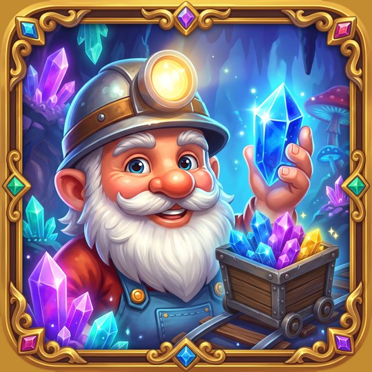

Gnome des Cavernes Enchantées
ਕੀ ਮਿਲੇਗਾ
- 6 ਗੁਫਾਵਾਂ ਵਿੱਚ 90 ਪੱਧਰ
- ਫਸਣ 'ਤੇ ਸੰਕੇਤ
- ਖਾਤੇ ਦੀ ਲੋੜ ਨਹੀਂ, ਆਫਲਾਈਨ ਖੇਡੀ ਜਾ ਸਕਦੀ ਹੈ

ਜਲਦੀ ਹੀ iPhone ਅਤੇ Android ਉੱਤੇ
ਕਾਂਟੇ ਬਦਲੋ, ਗੱਡੀਆਂ ਚਲਾਓ।
ਜਲਦੀ ਹੀ Android ਉੱਤੇਗੱਡੀਆਂ ਸੁਰੰਗ ਵਿੱਚੋਂ ਨਿਕਲ ਕੇ ਆਪਣੇ ਆਪ ਚੱਲਦੀਆਂ ਹਨ। ਕਾਂਟੇ ਇਸ ਤਰ੍ਹਾਂ ਬਦਲੋ ਕਿ ਹਰ ਇੱਕ ਬਿਨਾਂ ਟਕਰਾਏ ਆਪਣੇ ਰੰਗ ਦੇ ਨਿਕਾਸ ਤੱਕ ਪਹੁੰਚੇ।
6 ਗੁਫਾਵਾਂ ਵਿੱਚ 90 ਪੱਧਰ: ਲੀਵਰ, ਘੁੰਮਦੇ ਪੁਲ, ਬਰਫ਼, ਚੜ੍ਹਦਾ ਪਾਣੀ ਅਤੇ ਲਾਵਾ। ਘੱਟ ਚਾਲਾਂ ਨਾਲ 3 ਤਾਰੇ ਜਿੱਤੋ, ਅਤੇ ਫਸਣ 'ਤੇ ਬੌਣਾ ਮਦਦ ਕਰਦਾ ਹੈ।
Gnome des Cavernes Enchantées ਜਲਦੀ ਹੀ iPhone ਲਈ App Store ਉੱਤੇ ਅਤੇ Android ਉੱਤੇ ਆ ਰਹੀ ਹੈ। ਰਿਲੀਜ਼ ਹੁੰਦੇ ਹੀ ਡਾਊਨਲੋਡ ਬਟਨ ਇਸ ਪੰਨੇ ਦੇ ਸਿਖਰ ਉੱਤੇ ਦਿਸੇਗਾ।
Gnome des Cavernes Enchantées
ਸਾਨੂੰ ਈਮੇਲ ਕਰੋ: contegamesstudio@gmail.com